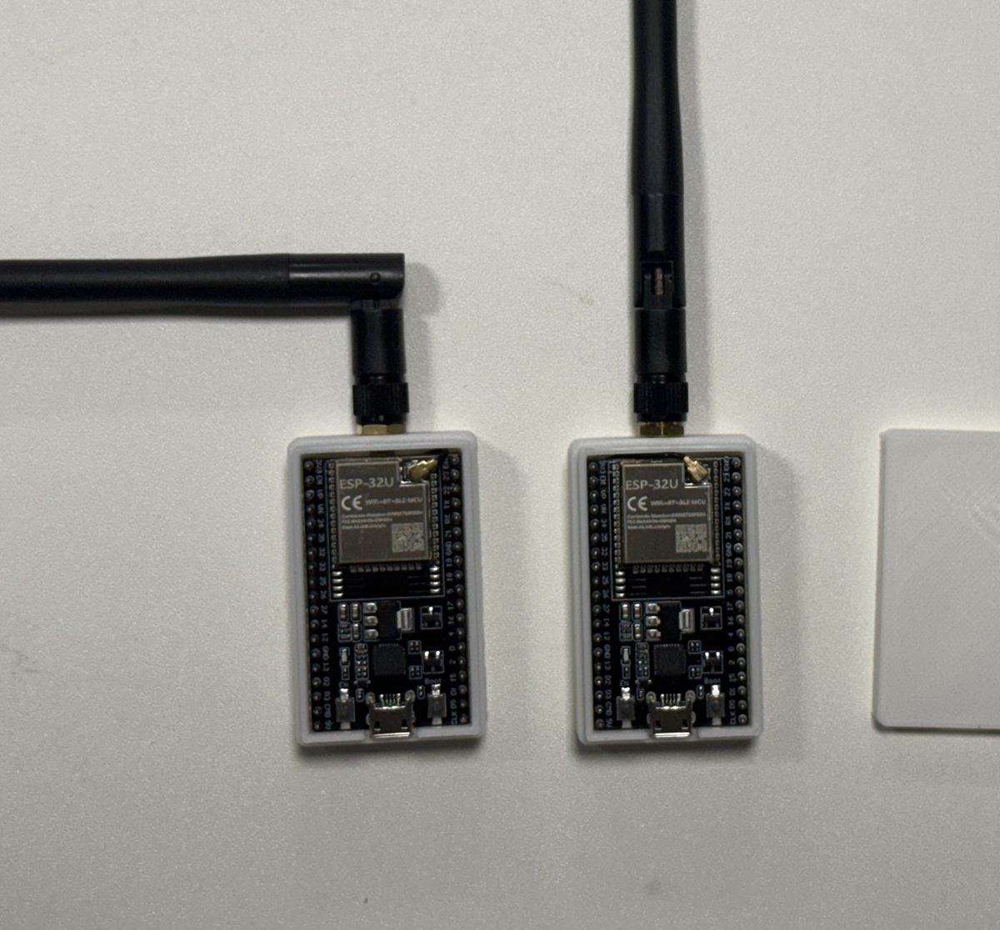
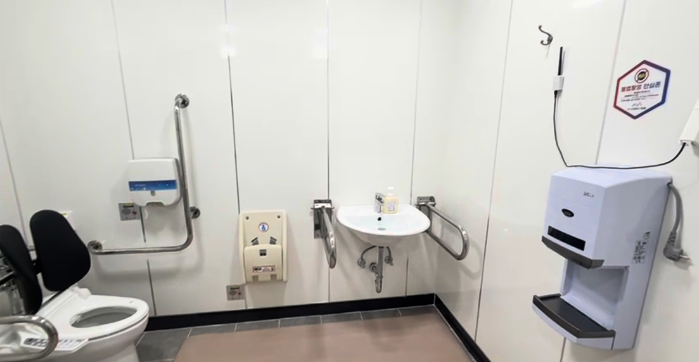
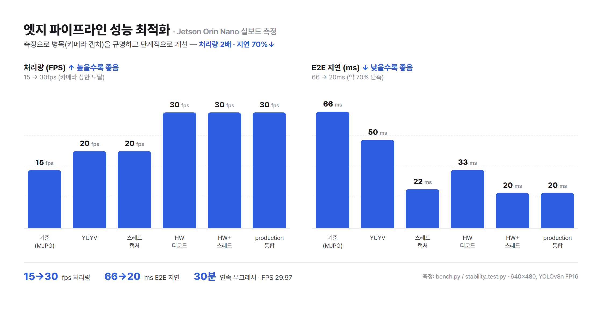
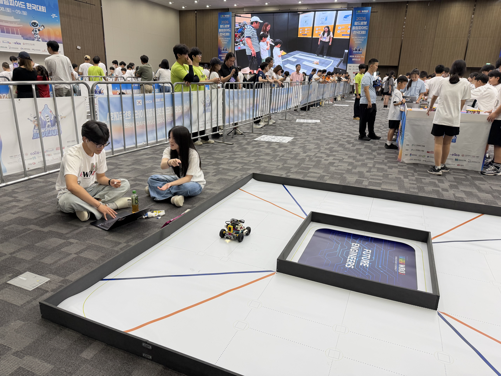
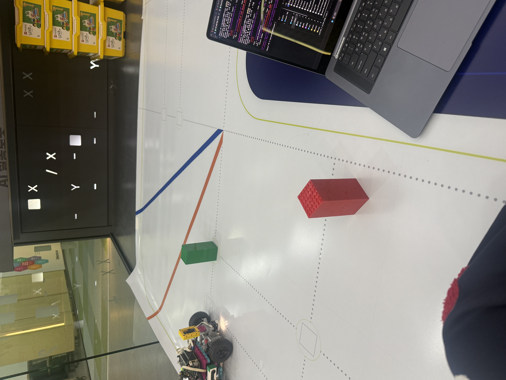
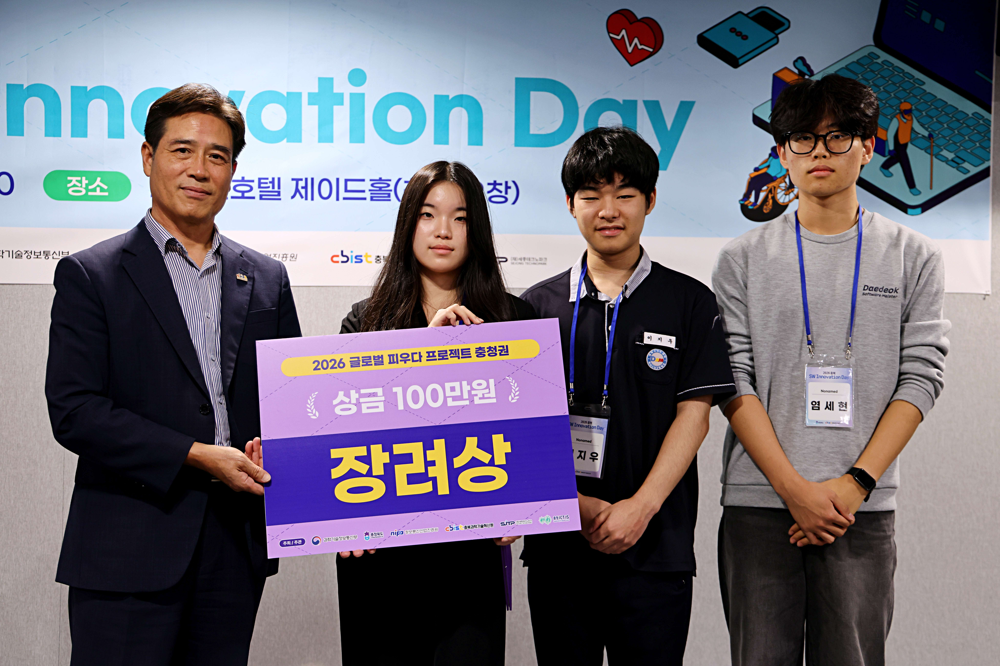
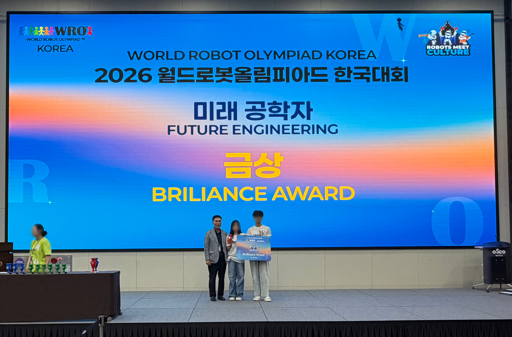
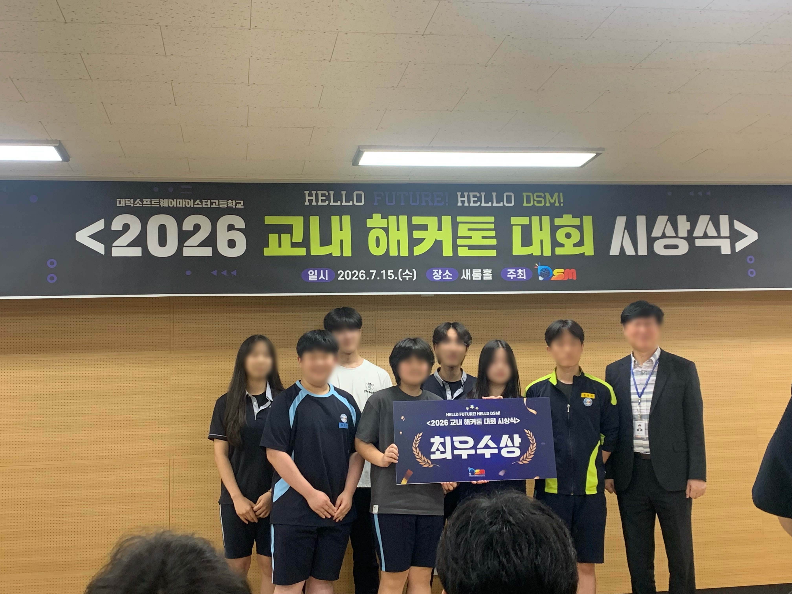
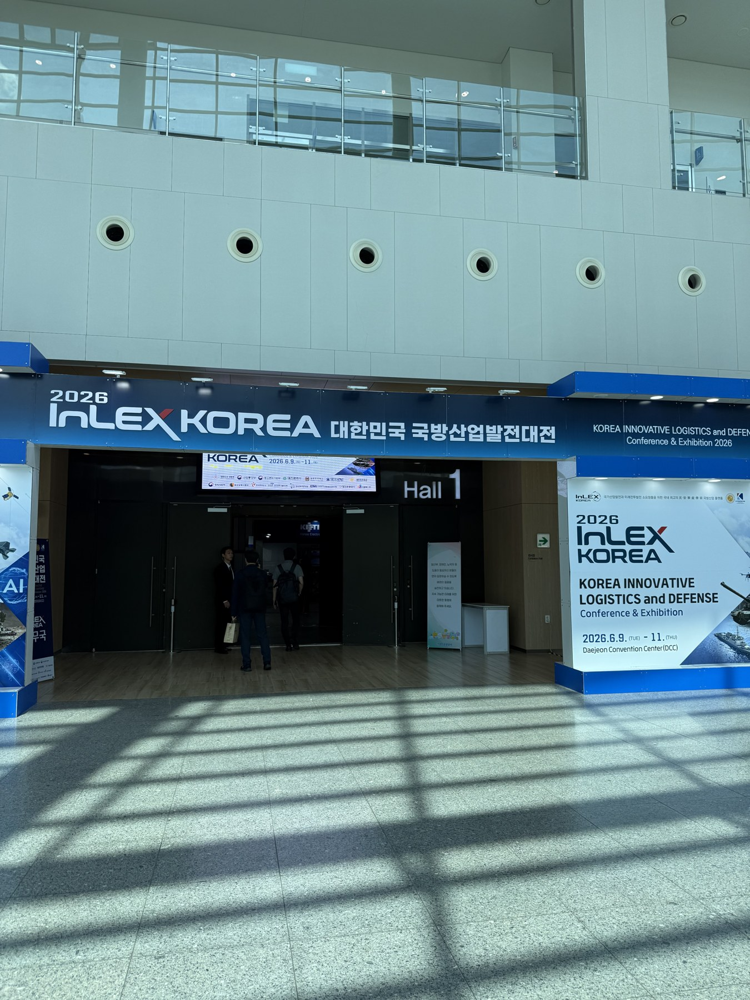

전교 부회장 · 학급 임원
2025 학생회·반장부터 2026 전교 부회장까지 학생 대표를 맡으며 대크톡·이음 등 학교 행사를 직접 기획·운영했습니다. 여러 구성원의 의견을 모아 실행하며 조율과 소통 역량을 키웠습니다.
PORTFOLIO
Embedded Software Developer
기회를 기다리기보다 할 일을 찾아 움직이는 개발자입니다.

 C
C STM32
STM32 ESP32
ESP32 Linux
Linux MQTT
MQTT ROS2
ROS2 OpenCV
OpenCV Raspberry Pi
Raspberry Pi Jetson
Jetson Python
Python PyTorch
PyTorch YOLO
YOLO Android
Android FastAPI
FastAPI Git
Git Notion
Notion Docker
Docker충청북도교육감상 · 자율주행 로봇
우물집(wellHouse) IoT 침수 대비 서비스
충북과학기술혁신원장상 · CSI 낙상 감지
2025 학생회·반장부터 2026 전교 부회장까지 학생 대표를 맡으며 대크톡·이음 등 학교 행사를 직접 기획·운영했습니다. 여러 구성원의 의견을 모아 실행하며 조율과 소통 역량을 키웠습니다.
withyou+ 서비스로 (주)에듀플렉스 투자 IR 피칭에 참여해 문제 정의와 기술 구성을 투자자·비개발자가 이해할 수 있도록 정리해 발표했습니다. 기술을 청중 눈높이에 맞춰 전달하는 경험을 쌓았습니다.
로봇 대회 운영 지원
직업계고박람회 · 미래교육박람회 · 학과체험 · 대프콘(wify)
Google I/O · AI EXPO · 소프트웨이브 · Base44 바이브코딩 · 창업 밋업 등


카메라 없이 Wi-Fi 신호의 미세한 변화(CSI)를 분석해 실내 낙상을 감지하는 시스템입니다. 사생활 침해 없이 고령자의 낙상을 감지하는 것을 목표로, ESP32로 수집한 신호를 딥러닝 모델로 판별하고 결과를 Android 앱으로 전달해 보호자가 즉시 확인할 수 있도록 구현했습니다.
앱–펌웨어 연동이 반복적으로 끊기는 문제
문제 배경
개발 중 휴대폰 핫스팟 환경에서 앱과 펌웨어를 연동해 테스트했는데, 통신이 주기적으로 끊겨 데이터 수신이 불안정했습니다.
해결 방법
원인이 핫스팟이 UDP 트래픽을 주기적으로 차단하는 데 있음을 확인하고 별도 공유기 환경으로 전환해 안정적인 통신을 확보했습니다.
통신 기능을 STA 모드에 둘지 AP 모드에 둘지
문제 배경
앱 연결과 서버 전송 기능을 STA 모드에서 처리할지 AP 모드에서 처리할지 결정해야 했고, 두 방식은 연결 안정성·초기 설정·서버 접근성에서 장단점이 달랐습니다.
해결 방법
서버 전송과 안정적인 연결이 핵심 요구사항이라 판단해 기존 네트워크에 접속하는 STA 모드로 통신 구조를 구성했습니다. 기술보다 요구사항을 먼저 정의하고 방식을 고른 과정이었습니다.
ESP32 펌웨어를 직접 구조부터 작성하며 CSI 원신호를 끊김 없이 수집·전송하는 통신 로직을 다뤘고, 통신을 STA/AP 중 어디에 둘지 고민하며 '기술을 먼저 정하기보다 요구사항을 먼저 정의해야 한다'는 것을 배웠습니다. 헤더/소스 분리와 함수 단위 주석으로 협업자가 읽을 수 있는 펌웨어를 처음 의식했고, 가장 걱정했던 펌웨어–서버–앱 전체 연동을 완성해 실제 서비스처럼 동작시킨 경험이었습니다.
팀 프로젝트
Edge Vision 파이프라인 · 서버 연동 담당


차량 지붕에 카메라와 Jetson을 달고 주행하면 지나치는 배전 전주 상단의 위험 요소(까치집·수목)를 자동으로 촬영·판정해 서버·대시보드에 기록하는 시스템입니다. 원본 영상은 기기 밖으로 내보내지 않고 판정 결과와 사진만 전송해 프라이버시를 지킵니다. 저는 카메라 입력부터 서버 연동까지의 Edge Vision 파이프라인을 담당했습니다.
성능이 안 나오는데, 추론이 아니라 카메라가 병목이었다
문제 배경
30fps가 목표였지만 15fps에 머물렀습니다. 처음엔 AI 추론을 의심했지만, 성능 측정 도구로 단계별 지연을 쪼개 보니 E2E 66ms 중 카메라 캡처가 45ms(68%)였고 추론은 13ms·GPU 28%뿐이었습니다.
해결 방법
병목이 MJPG를 CPU로 디코딩하는 데 있음을 데이터로 확인하고 이를 NVDEC 하드웨어 디코드로 옮긴 뒤 캡처를 스레드로 분리했습니다. 그 결과 15fps → 30fps, E2E 66ms → 20ms를 달성했습니다. '감'이 아니라 측정으로 방향을 잡은 것이 핵심이었습니다.
주행 중 Wi-Fi가 끊기면 데이터가 유실되는 문제
문제 배경
이동하며 촬영하다 보니 네트워크가 자주 끊겼고, 그때마다 전송 중이던 판정 결과·기기 상태가 유실될 수 있었습니다.
해결 방법
자동 재연결과 오프라인 버퍼를 두어 연결이 끊겨도 데이터를 순서대로 보관했다가 복구되면 유실 없이 전송하도록 구현했습니다.
팀원이 만든 AI 탐지 결과를 실제 하드웨어 위에서 하나의 시스템으로 이어 붙이는 Edge Vision 파이프라인을 맡으며 성능을 '감'이 아니라 프레임 드롭·지연·온도·전력 같은 실측 지표로 검증하는 것의 중요성을 배웠습니다. 엣지 파이프라인을 실보드에서 검증하고, 팀원의 탐지 모델 연동까지 구동을 확인했습니다.
대회 프로젝트 · 팀(2인)
금상 · 충청북도교육감상 (종합 2등)


사전 정보가 주어지지 않은 트랙을 카메라로 인식하며 완전 자율로 3바퀴 주행하고, 무작위로 놓인 빨강·초록 2색 표지판을 실시간 판단해 좌우로 회피한 뒤 지정 구역에 평행주차까지 수행하는 대회입니다. 저는 하드웨어 제작부터 주행 소프트웨어 튜닝까지 전 과정에 참여했습니다.
녹색 표지판이 조명에 따라 감지되지 않는 문제
문제 배경
HSV 색공간에서 빨강은 잘 잡혔지만, 녹색은 색상(Hue) 범위가 넓고 조명이 약하면 채도·명도까지 함께 떨어져 간헐적으로 미검출됐습니다.
해결 방법
녹색 전용으로 Hue 범위와 채도·명도 하한을 따로 조정하고 보조 조명으로 채도를 확보했습니다. 경기장이 바뀔 때마다 색 기준을 다시 맞추는 재보정 절차도 정립했습니다.
좌우 회피 동작이 불균형한 문제
문제 배경
바닥 마찰이 큰 환경에서 한쪽(우회전) 회피가 둔하게 동작해 같은 명령에도 좌우 거동이 달랐습니다.
해결 방법
방향별 모터 속도 값을 나눠 세밀하게 조정해 좌우 회피 거동의 균형을 맞췄습니다.
기술적으로는 비전 시스템이 환경 변화에 민감하다는 점과 그 변화를 재현 가능한 절차로 다루는 것의 중요성을 배웠습니다. 더 크게 남은 것은 준비 과정에 대한 반성입니다. 초반에 방향을 잘못 잡아 시간을 많이 돌아갔고 마감 직전 집중에 의존하던 방식의 한계를 실감했습니다. 이 경험으로 초기에 방향을 충분히 검증하고 문제를 빠르게 발견해 꾸준히 완성도를 높여가는 과정의 중요성을 체감했고, 결과뿐 아니라 준비 과정에서도 스스로 만족할 수 있는 개발자가 되고 싶습니다.






 GitHub
GitHub